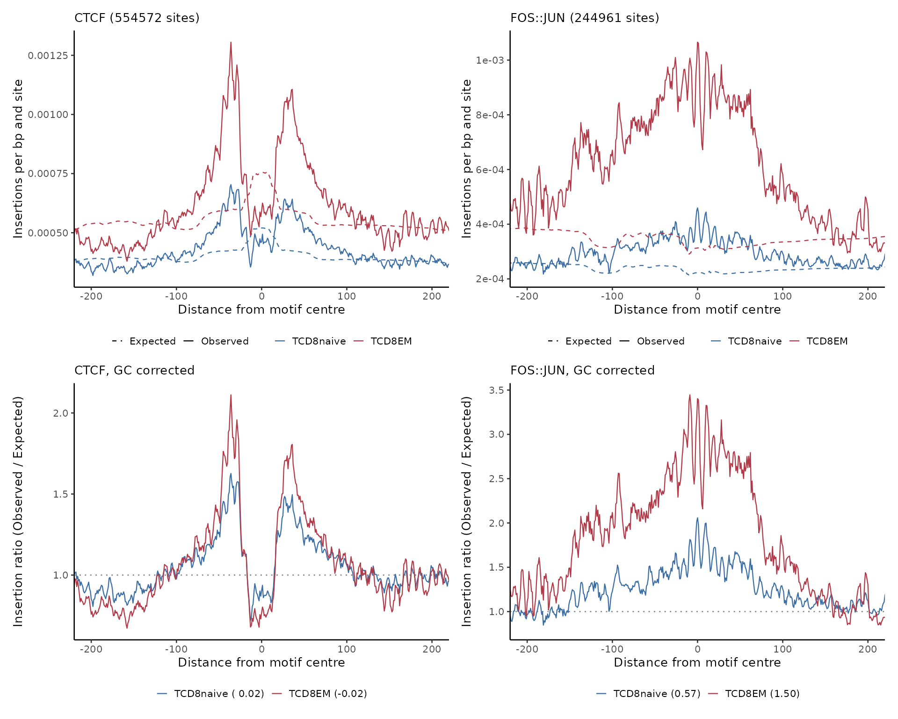

A worked example with the ChrAccR example data
Irem B. Gunduz
Source:vignettes/chromTFR-example.Rmd
chromTFR-example.RmdThe data
ChrAccRex ships an ATAC-seq example dataset of sorted
immune cells, aligned to hg38 and stored as a DsATAC object
with fragment level data. That is what chromTFR needs:
footprints are built from single base Tn5 cut positions, which only
fragments provide.
remotes::install_github("EpigenomeInformatics/ChrAccRex")
library(chromTFR)
#> Loading required package: data.table
#> Loading required package: SummarizedExperiment
#> Loading required package: MatrixGenerics
#> Loading required package: matrixStats
#>
#> Attaching package: 'MatrixGenerics'
#> The following objects are masked from 'package:matrixStats':
#>
#> colAlls, colAnyNAs, colAnys, colAvgsPerRowSet, colCollapse,
#> colCounts, colCummaxs, colCummins, colCumprods, colCumsums,
#> colDiffs, colIQRDiffs, colIQRs, colLogSumExps, colMadDiffs,
#> colMads, colMaxs, colMeans2, colMedians, colMins, colOrderStats,
#> colProds, colQuantiles, colRanges, colRanks, colSdDiffs, colSds,
#> colSums2, colTabulates, colVarDiffs, colVars, colWeightedMads,
#> colWeightedMeans, colWeightedMedians, colWeightedSds,
#> colWeightedVars, rowAlls, rowAnyNAs, rowAnys, rowAvgsPerColSet,
#> rowCollapse, rowCounts, rowCummaxs, rowCummins, rowCumprods,
#> rowCumsums, rowDiffs, rowIQRDiffs, rowIQRs, rowLogSumExps,
#> rowMadDiffs, rowMads, rowMaxs, rowMeans2, rowMedians, rowMins,
#> rowOrderStats, rowProds, rowQuantiles, rowRanges, rowRanks,
#> rowSdDiffs, rowSds, rowSums2, rowTabulates, rowVarDiffs, rowVars,
#> rowWeightedMads, rowWeightedMeans, rowWeightedMedians,
#> rowWeightedSds, rowWeightedVars
#> Loading required package: GenomicRanges
#> Loading required package: stats4
#> Loading required package: BiocGenerics
#>
#> Attaching package: 'BiocGenerics'
#> The following objects are masked from 'package:stats':
#>
#> IQR, mad, sd, var, xtabs
#> The following objects are masked from 'package:base':
#>
#> Filter, Find, Map, Position, Reduce, anyDuplicated, aperm, append,
#> as.data.frame, basename, cbind, colnames, dirname, do.call,
#> duplicated, eval, evalq, get, grep, grepl, intersect, is.unsorted,
#> lapply, mapply, match, mget, order, paste, pmax, pmax.int, pmin,
#> pmin.int, rank, rbind, rownames, sapply, setdiff, sort, table,
#> tapply, union, unique, unsplit, which.max, which.min
#> Loading required package: S4Vectors
#>
#> Attaching package: 'S4Vectors'
#> The following objects are masked from 'package:data.table':
#>
#> first, second
#> The following object is masked from 'package:utils':
#>
#> findMatches
#> The following objects are masked from 'package:base':
#>
#> I, expand.grid, unname
#> Loading required package: IRanges
#>
#> Attaching package: 'IRanges'
#> The following object is masked from 'package:data.table':
#>
#> shift
#> Loading required package: GenomeInfoDb
#> Loading required package: Biobase
#> Welcome to Bioconductor
#>
#> Vignettes contain introductory material; view with
#> 'browseVignettes()'. To cite Bioconductor, see
#> 'citation("Biobase")', and for packages 'citation("pkgname")'.
#>
#> Attaching package: 'Biobase'
#> The following object is masked from 'package:MatrixGenerics':
#>
#> rowMedians
#> The following objects are masked from 'package:matrixStats':
#>
#> anyMissing, rowMedians
library(data.table)
library(ggplot2)
dsa <- ChrAccRex::loadExample("dsAtac_ia_example")
#> 2026-09-28 22:47:00 2.0 STATUS STARTED Loading region count data from HDF5
#> 2026-09-28 22:47:00 2.0 STATUS Region type: promoters_gc_protein_coding
#> 2026-09-28 22:47:00 2.0 STATUS Region type: IA_prog_peaks
#> 2026-09-28 22:47:00 2.0 STATUS Region type: t200
#> 2026-09-28 22:47:00 2.0 STATUS Region type: t10k
#> 2026-09-28 22:47:00 2.0 STATUS COMPLETED Loading region count data from HDF5
#>
#> 2026-09-28 22:47:00 2.0 STATUS STARTED Updating fragment RDS file references
#> 2026-09-28 22:47:00 2.0 STATUS COMPLETED Updating fragment RDS file references
ann <- getAccSampleAnnotation(dsa)
# The annotation is in the order of the samples, but its sampleId column
# lists the merged replicates, so take the ids from the object itself
ann$sample <- getAccSamples(dsa)
table(ann$cellType)
#>
#> TCD8EM TCD8naive TeffMem TeffNaive
#> 8 8 8 9
ChrAccR::getRegionTypes(dsa)
#> [1] "promoters_gc_protein_coding" "IA_prog_peaks"
#> [3] "t200" "t10k"This vignette compares naive against effector memory CD8 T cells, using three unstimulated samples of each. Restricting to a handful of samples keeps the build short; a real run would use all of them.
groups <- c("TCD8naive", "TCD8EM")
picked <- do.call(rbind, lapply(groups, function(g) {
rows <- ann[ann$cellType == g & ann$stimulus == "U", , drop = FALSE]
head(rows, 3)
}))
if (!all(groups %in% picked$cellType)) {
stop("No unstimulated samples for: ",
paste(setdiff(groups, picked$cellType), collapse = ", ")
)
}
picked$sample
#> [1] "TCD8naive_U_1001" "TCD8naive_U_1002" "TCD8naive_U_1003" "TCD8EM_U_1001"
#> [5] "TCD8EM_U_1002" "TCD8EM_U_1003"Insertion sites
The peaks of the example dataset are extended so that they still cover the flanks of a motif window, and the insertions are counted per base inside them. Scores are insertions per million, so samples of different depth stay comparable.
peaks <- getAccRegions(dsa, regionType = "IA_prog_peaks", extend = 500)
cache <- tempfile("chromTFR_example")
dir.create(cache)
files <- vapply(picked$sample, function(s) {
f <- file.path(cache, paste0("ins_", s, ".RDS"))
saveRDS(getTn5Insertions(dsa, s, regions = peaks), f)
f
}, character(1))
#> INFO [2026-09-28 22:47:01] TCD8naive_U_1001: 452102 insertions, 260301 positions
#> INFO [2026-09-28 22:47:02] TCD8naive_U_1002: 663086 insertions, 392195 positions
#> INFO [2026-09-28 22:47:02] TCD8naive_U_1003: 318716 insertions, 205502 positions
#> INFO [2026-09-28 22:47:03] TCD8EM_U_1001: 778908 insertions, 395991 positions
#> INFO [2026-09-28 22:47:04] TCD8EM_U_1002: 526024 insertions, 266680 positions
#> INFO [2026-09-28 22:47:04] TCD8EM_U_1003: 376778 insertions, 203893 positionsmergeInsertionSites() pools the samples of a group into
one aggregate, averaging the scores so that groups of unequal size stay
on the same scale.
ins <- lapply(groups, function(g) {
mergeInsertionSites(files[picked$cellType == g])
})
names(ins) <- groups
ins[["TCD8naive"]]
#> GRanges object with 775869 ranges and 2 metadata columns:
#> seqnames ranges strand | score coverage
#> <Rle> <IRanges> <Rle> | <numeric> <integer>
#> [1] chr1 23401088 * | 1.045863 1
#> [2] chr1 23401103 * | 0.737297 1
#> [3] chr1 23401106 * | 1.045863 1
#> [4] chr1 23401115 * | 0.502700 1
#> [5] chr1 23401122 * | 0.737297 1
#> ... ... ... ... . ... ...
#> [775865] chr21 31000002 * | 0.502700 1
#> [775866] chr21 31000017 * | 0.737297 1
#> [775867] chr21 31000054 * | 0.502700 1
#> [775868] chr21 31000171 * | 1.005400 2
#> [775869] chr21 31000448 * | 0.737297 1
#> -------
#> seqinfo: 4 sequences from an unspecified genome; no seqlengthsFootprints
The annotation comes from methylTFRAnnotationHg38,
unchanged from methylTFR. prepareTFBS()
resizes the binding sites to the footprint window; everything downstream
works on that object.
motifs <- c("CTCF", "FOS::JUN")
tf_bindsites <- methylTFRAnnotationHg38::getTFbindsites(
motifSet = "jaspar2020"
)
gcfreqs <- methylTFRAnnotationHg38::getGCfreq(motifSet = "jaspar2020")
gc_dist <- methylTFRAnnotationHg38::getGenomeGC()
tfbs <- lapply(motifs, function(m) prepareTFBS(tf_bindsites[[m]]))
names(tfbs) <- motifs
lengths(tfbs)
#> CTCF FOS::JUN
#> 554572 244961The expected profile is the GC model here: the insertion density of the sample summarised per GC bin, combined with the GC composition of the binding sites.
binIns <- lapply(ins, addGCBintoAccessome, gcdist = gc_dist)
expected <- lapply(groups, function(g) {
prof <- lapply(motifs, function(m) {
computeAccExpectations(binIns[[g]], gcfreqs[[m]])
})
names(prof) <- motifs
prof
})
names(expected) <- groupsaccFootprintData() stacks the insertions on the centre
of every binding site and returns the observed and expected curves of
both groups.
profiles <- lapply(motifs, function(m) {
e <- lapply(groups, function(g) expected[[g]][[m]])
names(e) <- groups
accFootprintData(tfbs[[m]], ins, e)
})
names(profiles) <- motifs
head(profiles[["CTCF"]])
#> x avg_ins type group
#> <num> <num> <char> <fctr>
#> 1: -272 0.0003567070 Observed TCD8naive
#> 2: -271 0.0003552325 Observed TCD8naive
#> 3: -270 0.0003511040 Observed TCD8naive
#> 4: -269 0.0003618358 Observed TCD8naive
#> 5: -268 0.0003618812 Observed TCD8naive
#> 6: -267 0.0003682324 Observed TCD8naiveThe deviation score reads that curve as one number, the insertion density of the central window over the density of the outer flanks, minus the same ratio on the expected curve. A value below zero means the centre is more protected than the sequence composition predicts.
vapply(profiles, function(df) {
df[group == "TCD8naive", accDeviation(.SD),
.SDcols = c("x", "avg_ins", "type")]
}, numeric(1))
#> CTCF FOS::JUN
#> 0.01605233 0.57030763
colours <- c(TCD8naive = "#3B6EA5", TCD8EM = "#B23A48")
plotAccFootprintGrid(profiles, tfbs, colours, corrected = "GC corrected")
#> INFO [2026-09-28 22:47:33] CTCF, GC corrected deviations: TCD8naive = 0.016, TCD8EM = -0.021
#> INFO [2026-09-28 22:47:33] FOS::JUN, GC corrected deviations: TCD8naive = 0.57, TCD8EM = 1.496
CTCF is the control to look at first: it binds stably, so its footprint is deep and the corrected curve dips well below one. AP-1 is the opposite case, a factor with a short residence time whose footprint stays shallow even where it is active.
The k-mer model
Tn5 prefers some short sequences over others, and a motif is a fixed
string of letters in the centre of every window, so part of any dip is
chemistry rather than protein. computeKmerBias() measures
that preference from the cuts themselves and
kmerBiasProfile() turns it into an expected curve. It needs
the genome sequence.
library(BSgenome.Hsapiens.UCSC.hg38)
genome <- BSgenome.Hsapiens.UCSC.hg38
bg <- kmerBackground(peaks, genome, k = 6L)
bias <- lapply(ins, computeKmerBias,
regions = peaks, genome = genome, k = 6L, bg = bg
)
expectedK <- lapply(groups, function(g) {
prof <- lapply(motifs, function(m) {
kmerBiasProfile(tfbs[[m]], genome, bias[[g]], k = 6L)
})
names(prof) <- motifs
prof
})
names(expectedK) <- groupsComparing the two models on the same motif is the honest check: a dip that survives the k-mer correction is a footprint, one that flattens was Tn5 preferring the flanking sequence.
Session info
sessionInfo()
#> R version 4.3.3 (2024-02-29)
#> Platform: x86_64-conda-linux-gnu (64-bit)
#> Running under: Debian GNU/Linux 12 (bookworm)
#>
#> Matrix products: default
#> BLAS/LAPACK: /icbb/projects/share/software/packages/miniconda3/envs/chromTFR/lib/libopenblasp-r0.3.34.so; LAPACK version 3.12.0
#>
#> locale:
#> [1] C
#>
#> time zone: Europe/Berlin
#> tzcode source: system (glibc)
#>
#> attached base packages:
#> [1] stats4 stats graphics grDevices utils datasets methods
#> [8] base
#>
#> other attached packages:
#> [1] ggplot2_3.5.2 chromTFR_0.99.0
#> [3] SummarizedExperiment_1.32.0 Biobase_2.62.0
#> [5] GenomicRanges_1.54.1 GenomeInfoDb_1.38.1
#> [7] IRanges_2.36.0 S4Vectors_0.40.2
#> [9] BiocGenerics_0.48.1 MatrixGenerics_1.14.0
#> [11] matrixStats_1.5.0 data.table_1.17.8
#> [13] BiocStyle_2.30.0
#>
#> loaded via a namespace (and not attached):
#> [1] tidyselect_1.2.1 ChrAccRex_0.2
#> [3] dplyr_1.1.4 farver_2.1.2
#> [5] Biostrings_2.70.1 bitops_1.0-9
#> [7] fastmap_1.2.0 RCurl_1.98-1.17
#> [9] GenomicAlignments_1.38.0 muRtools_0.9.6
#> [11] digest_0.6.37 lifecycle_1.0.4
#> [13] cluster_2.1.8.1 magrittr_2.0.3
#> [15] compiler_4.3.3 rlang_1.1.6
#> [17] sass_0.4.10 tools_4.3.3
#> [19] yaml_2.3.10 knitr_1.50
#> [21] labeling_0.4.3 S4Arrays_1.2.0
#> [23] htmlwidgets_1.6.4 DelayedArray_0.28.0
#> [25] RColorBrewer_1.1-3 abind_1.4-5
#> [27] BiocParallel_1.36.0 HDF5Array_1.30.0
#> [29] withr_3.0.2 desc_1.4.3
#> [31] grid_4.3.3 colorspace_2.1-1
#> [33] Rhdf5lib_1.24.0 scales_1.4.0
#> [35] iterators_1.0.14 dichromat_2.0-0.1
#> [37] cli_3.6.5 rmarkdown_2.29
#> [39] crayon_1.5.3 ragg_1.5.0
#> [41] generics_0.1.4 rjson_0.2.23
#> [43] rhdf5_2.46.1 cachem_1.1.0
#> [45] zlibbioc_1.48.0 parallel_4.3.3
#> [47] BiocManager_1.30.26 XVector_0.42.0
#> [49] vctrs_0.6.5 Matrix_1.6-5
#> [51] jsonlite_2.0.0 bookdown_0.48
#> [53] patchwork_1.3.2 GetoptLong_1.0.5
#> [55] clue_0.3-66 muLogR_0.2
#> [57] systemfonts_1.2.3 foreach_1.5.2
#> [59] jquerylib_0.1.4 glue_1.8.0
#> [61] pkgdown_2.1.3 codetools_0.2-20
#> [63] methylTFRAnnotationHg38_0.99.0 gtable_0.3.6
#> [65] shape_1.4.6.1 ChrAccR_0.9.25
#> [67] ComplexHeatmap_2.18.0 tibble_3.3.0
#> [69] logger_0.4.0 pillar_1.11.0
#> [71] rhdf5filters_1.14.1 htmltools_0.5.8.1
#> [73] GenomeInfoDbData_1.2.11 circlize_0.4.16
#> [75] R6_2.6.1 textshaping_1.0.3
#> [77] doParallel_1.0.17 evaluate_1.0.5
#> [79] lattice_0.22-7 png_0.1-8
#> [81] Rsamtools_2.18.0 bslib_0.9.0
#> [83] SparseArray_1.2.2 xfun_0.61
#> [85] fs_1.6.6 pkgconfig_2.0.3
#> [87] GlobalOptions_0.1.2